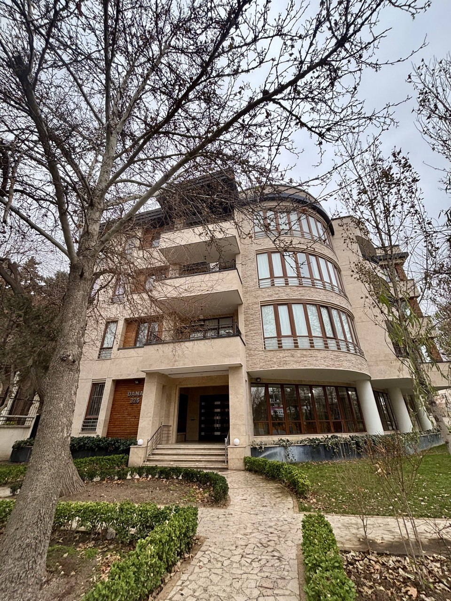

اهمیت کار مشاور املاک و کلاس کاری در این حرفه
نکات مهم در اجاره ملک در مهرشهر کرج
کار مشاور املاک، یکی از حرفههای کلیدی و تأثیرگذار در بازار مسکن و اقتصاد است. این شغل نه فقط یک واسطهگری ساده بین خریدار و فروشنده، بلکه پلی است برای تحقق آرزوهای مسکونی، سرمایهگذاریهای موفق و خلق فرصتهای جدید. یک مشاور املاک حرفهای باید شناخت عمیقی از منطقه، قوانین و روندهای بازار داشته باشد. اعتمادسازی، صداقت در گفتار و همراهی واقعی با مشتریان، پایههای موفقیت در این حوزهاند.
دانش واقعی
آگاه، تحلیلگر، متعهد به رشدکلاس کاری
حرفهای، اخلاقمحورمشاوری قابل اعتماد
تصمیمهای مهم زندگی


چرا کار مشاور املاک اهمیت دارد؟
• تأثیر مستقیم بر زندگی مردم: خانه، جایی است که آرامش و خاطرات ساخته میشود. مشاور املاک، راهنماییست که به مردم کمک میکند بهترین تصمیم را برای این بخش مهم زندگیشان بگیرند.کلاس کاری در مشاور املاک یعنی چه؟
کلاس کاری به معنای برخورد حرفهای، مسئولیتپذیری، و احترام به مشتری است. یک مشاور املاک با کلاس کاری:ارائه اطلاعات صحیح و کامل
• مشاور باید تمام جزئیات ملک، شامل وضعیت حقوقی، اسناد، و مشکلات احتمالی را بهطور دقیق و شفاف به مشتری ارائه دهد.تحلیل دقیق بازار و قیمتگذاری منصفانه
• قیمت پیشنهادی باید بر اساس دادههای واقعی بازار و ارزش روز ملک تعیین شود تا مشتری دچار ضرر مالی نشود.
• مشاور باید از قیمتهای کاذب و افزایشهای غیرمنطقی جلوگیری کند.
حفظ امانتداری و احترام به محرمانگی
• اطلاعات مالی، شخصی و حرفهای مشتری باید محرمانه باقی بماند و بدون اجازه منتشر نشود
پیگیری و همراهی پس از معامله
• مشاور مسئول است تا در صورت بروز مشکلات پس از معامله، مانند انتقال سند یا دریافت مدارک، مشتری را راهنمایی و همراهی کند.
یک مشاور املاک متعهد و حرفهای، مانند یک نگهبان سرمایه مشتری عمل میکند و تلاش میکند با صداقت، دانش و
دلسوزی، بهترین نتایج را برای مشتریان خود رقم بزند. این مسئولیت نه تنها یک وظیفه کاری، بلکه تعهد اخلاقی است که
پایه اعتماد بین مشاور و مشتری را میسازد
مشاورینی حرفهای، با دانش و اعتماد به نفس
با این نگاه، ما قصد داریم مشاورینی حرفهای، با دانش و اعتماد به نفس بالا پرورش دهیم تا سهمی مؤثر در بازار املاک مهرشهر و فراتر از آن داشته باشند. تفاوت سطح مشاورین املاک در مهرشهر با دیگر نقاط مهرشهر بهعنوان یکی از مناطق مطرح و پیشرفته در زمینه معاملات ملکی، ویژگیها و شرایط خاصی دارد که باعث شده سطح خدمات و کیفیت مشاورین املاک آن نسبت به سایر نقاط متفاوت باشد. 
تجربه و تخصص بیشتر
مشاورین ایران بوم در مهرشهر معمولاً با بازار پیچیدهتر و متنوعتری روبرو هستند؛
• این باعث شده که آنها تجربه و تخصص بالاتری در ارزیابی قیمت، شناخت دقیق مناطق مختلف و پیشبینی روند بازار داشته
باشند.
• آشنایی عمیق با قوانین محلی و شرایط خاص منطقه از دیگر مزایای آنهاست.
کلاس کاری و حرفهایگری بالاتر
• مشاوران ایران بوم بیشتر به اصول اخلاقی، احترام به مشتری و حفظ اعتبار کاری اهمیت میدهند.
• برخورد حرفهای و خدمات پشتیبانی پس از فروش در این منطقه بسیار برجسته است.
• معمولاً مشاورین با لباس و ظاهر مناسب، همراه با دانش بهروز و رفتار مودبانه، مشتری را جذب میکنند.
استفاده از فناوری و روشهای نوین
• مشاورین موفق از ابزارهای دیجیتال، سایتهای پیشرفته، اپلیکیشنها و شبکههای اجتماعی برای معرفی بهتر
ملکها استفاده میکنند.
• آموزشهای تخصصی مداوم و آگاهی از تکنولوژیهای جدید در بازار املاک از ویژگیهای بارز آنهاست.
ارتباطات گسترده و شبکهسازی
• مشاورین حرفه ای معمولاً شبکه ارتباطی قوی با سازندگان، بانکها، و سایر فعالان بازار دارند که این باعث
تسریع و تسهیل روند معاملات میشود.
• این شبکه گسترده امکان ارائه خدمات متنوع و اختصاصی به مشتریان را فراهم میکند.
توجه ویژه به نیازهای خاص مشتریان
• به دلیل تنوع فرهنگی و اقتصادی ساکنان مهرشهر، مشاورین این منطقه مهارت بیشتری در درک و پاسخگویی به
نیازهای خاص مشتریان دارند.
• آنها تلاش میکنند بهترین راهکارها را متناسب با شرایط مالی و سلیقه هر فرد ارائه دهند.
جمع بندی
سؤالات پرتکرار شما
اگر سوالات بیشتری در این رابطه با ما دارید با استفاده از یکی از روش ها با ما ارتباط برقرار کنید.چطور میتوانم مشاور املاک موفقی باشم؟
با آموزش مداوم، رعایت اصول اخلاقی، تسلط به بازار و برقراری ارتباط حرفهای با مشتری میتوان به موفقیت رسید.کلاس کاری دقیقاً چه تفاوتی ایجاد میکند؟
کلاس کاری بالا اعتماد مشتری را جلب میکند، اعتبار برند شخصی شما را افزایش میدهد و احتمال معرفی شما به دیگران را بیشتر میکند.آیا نیاز به مجوز یا مدرک خاصی برای فعالیت دارم؟
بله، برای فعالیت رسمی در دفاتر املاک نیاز به دریافت کد رهگیری، جواز کسب و شرکت در دورههای آموزشی تخصصی است.تفاوت مشاورین مهرشهر با سایر مناطق چیست؟
مشاوران مهرشهر تجربهی بالاتر، آگاهی از شرایط خاص منطقه، استفاده از فناوری و برخورد حرفهایتری نسبت به بسیاری از مناطق دارند.